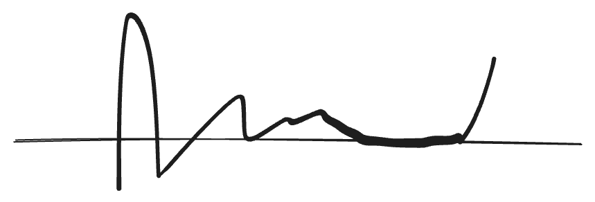

解析函数的零点
实函数的零点存在聚点（limit point）

Theo Let \(D\) be a domain in \(\mathbb{C}\).
\(f\in O(D)\), let \(Z_f=\{z\in D|f(z)=0\}\)
If \(Z_f\) has a limit point in \(D\), then \(f\equiv 0\) on \(D\)
pf. Set \(A=\{w\in D|w \text{ is a limit point of }Z_f\}\)
By assumption, \(A\neq \varnothing\)
The only two subsets of \(A\) that are both closed and open is \(\varnothing\) and \(A\) itself.
\(A\) is closed. (obvious)
let \(p\in A\subset D\), \(f(p)=0\)
write
\[ f(z)=\sum_{k=0}^{\infty}a_k(z-p)^k=\sum_{k=1}^{\infty}a_k(z-p)^k \]
Claim: \(a_k=0,\forall k\in \mathbb{N}\)
If not, then \(\exists a_{k_0}\neq 0\)
\[ \begin{aligned} \therefore f(z)&=a_{k_0}(z-p)^{k_0}+a_{k_0+1}(z-p)^{k_0+1}+\cdots\\ &=(z-p)^{k_0}(a_{k_0}+a_{k_0+1}(z-p)+\cdots) \end{aligned} \]
Set \(g(z)=a_{k_0}+a_{k_0+1}(z-p)+\cdots\), then \[ g(p)=a_{k_0}\neq 0 \]
在\(p\)点周围\(f\)均不等于0，只有\(f(p)=0\)，所以\(p\)不是聚点，不在\(A\)内，矛盾. \(\square\)
\(\therefore\) \(A\) is open \(\Rightarrow A=D\)